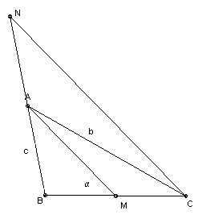

Construct the triangle ABC, given the lengths AC = b, AB = c and the acute ∠AMB = α, where M is the midpoint of BC. Prove that the construction is possible if and only if
b tan(α/2) ≤ c < b.
When does equality hold?
Answer
Equality holds if ∠BAC = 90o and ∠ACB = α/2
Solution

The key is to take N so that A is the midpoint of NB, then ∠NCB = α.
The construction is as follows: take BN length 2AB. Take circle through B and N such that the ∠BPN = α for points P on the arc BN. Take A as the midpoint of BN and let the circle center A, radius AC cut the arc BN at C. In general there are two possibilities for C.
Let X be the intersection of the arc BN and the perpendicular to the segment BN through A. For the construction to be possible we require AX ≥ AC > AB. But AB/AX = tan α/2, so we get the condition in the question.
Equality corresponds to C = X and hence to ∠BAC = 90o and ∠ACB = α/2.

Solutions are also available in: Samuel L Greitzer, International Mathematical Olympiads 1959-1977, MAA 1978, and in István Reiman, International Mathematical Olympiad 1959-1999, ISBN 189-8855-48-X.
© John Scholes
jscholes@kalva.demon.co.uk
19 Sep 1998
Last corrected/updated 26 Jan 2004